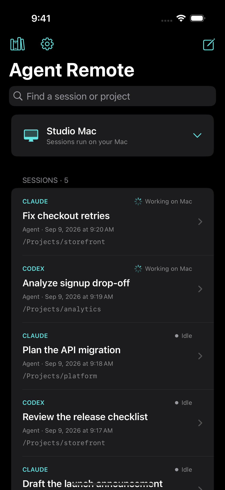

Claude Code and Codex run on your Mac. Drive them from your phone.
Agent Remote is a small Mac app that keeps your coding agents running on your own machine, with your files, tools and logins, and lets you start, follow and answer them from your iPhone or another computer.

Install Agent Remote on your Mac
Open the download, drag Agent Remote to Applications and open it. In its window, click Install Claude or Install Codex (or Sign in if you already use them). This Mac is where your agents run.
Get the app on your phone or laptop
Install the iPhone app, or Agent Remote Client on another Mac. Either one works as the remote.
Pair them and start a task
On the Mac, click Show pairing code. On the iPhone, tap Pair this iPhone → Scan QR code, scan it and tap Pair Mac (in Agent Remote Client, use Pair another Mac in the gear menu). Then tap the compose button, pick Claude or Codex and a folder, and send your first task.
iPhone / laptop ⇄ relay (forwards ciphertext) ⇄ your Mac
└ Claude Code, Codex,
your files and tools
What you get
- Several Claude and Codex sessions running in parallel, in one list.
- One live session shared between Terminal on the Mac and your phone.
- Push notifications when an agent replies or needs an answer.
- Questions, permission prompts and folder-trust prompts as tap-to-answer cards.
- Files, photos and screenshots in both directions, and voice dictation.
- A local knowledge base built from your conversations, shared by later sessions.
- Desktop apps that update themselves.
Security and privacy
- Your agents run on your Mac, with full access to it. Anyone you pair can direct them, so pair only your own devices. You can revoke a device at any time.
- End-to-end encrypted. Devices agree on keys with X25519 and encrypt every request, reply and file with AES-256-GCM. The relay sees routing IDs, IP addresses, timing and sizes, never content.
- No accounts, analytics or tracking. Model traffic goes from your Mac directly to Anthropic or OpenAI under your own sign-in.
- Run your own relay if you prefer: it is a small Node service in the repo. Instructions · Privacy policy
Requirements
- Mac: macOS 13.5 or later, Apple silicon or Intel, kept awake and online.
- An agent: Claude Code or Codex. Agent Remote can install and sign in for you.
- iPhone: iOS 17 or later. Desktop client: macOS 14 or later.
Open source
Agent Remote is MIT licensed. Read the code, report a bug, or send a pull request.
★ Star on GitHub